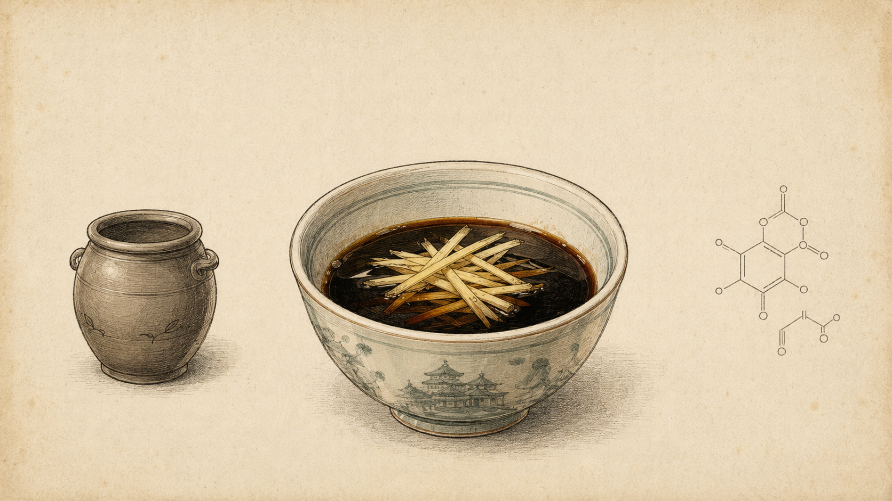

← Bitepedia

镇江香醋
THE PERFECT DIP
陶坛发酵
Fermented in Clay Urns
镇江香醋
Chinkiang Vinegar · Aged glutinous rice base
嫩姜丝
Young Ginger · Julienned to cut richness
醋酸与氨基酸
Acetic Acid & Amino Acids
酸香解腻 · 佐小笼之鲜
Cuts the richness, lifts the pork
← Back to 小笼包